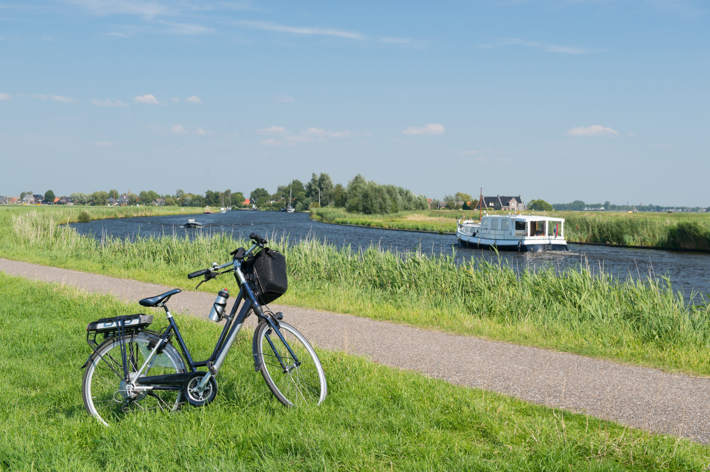
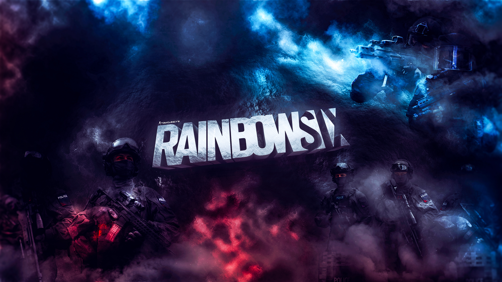
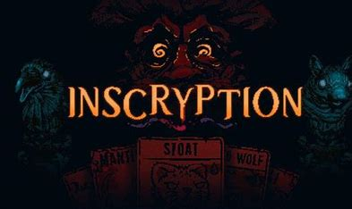

Ik hou van fietsen.
Ik ga dan naar een ander dorp dicht bij Stellendam toe fietsen.
Als ik daar ben dan ga ik rond het dorp naar de architectuur kijken.
Ik haal daarna mischien ook wat te eten of drinken bij een restaurant of eetcafe.

Ik hou ook van gamen.
mijn smaak in games verwisseld wel vaak, behalve een.
class based shooters, dat zijn schietspellen waarbij er verschillende karakters zijn die verschillende dingen kunnen.
ik speel op het moment rainbow six siege, dit een een spel van deze genre.

Mijn favoriete spel op het moment is dat eigenlijk niet.
mijn faforiete spel op het moment heet inscription.
iscription is een kaart spel.

deze pagina is gemaakt door mathijs veldmeijer en nagekeken door effe